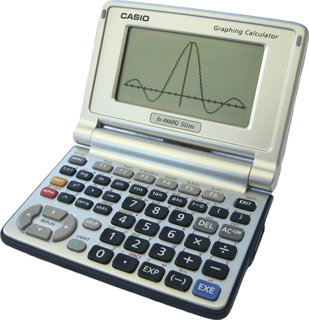

Reckon is a replacement calculator for the Casio fx-9860g calculator.
Some reasons to use Reckon are:
· Real-time Graphing
· High accuracy
· Complex numbers
· Matrices
· Large integers & Rationals
· Unit Conversions
· RPN and ALG entry formats.
· It's free!
To Install Reckon download the add-in application RECKON.G1A and install it using the Casio FA-124 installation tool.
Download the pdf user manual here.
The current version is 1.16. New versions will be posted to this page.
For more information, visit the Voidware Forum